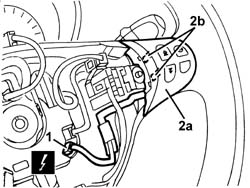

5570T66 module (one) on steering wheel for radio control - r+r
- Path
- Procedures > 55 ELECTRICAL EQUIPMENT > 5570 ACCESSORIES > 5570T car radio and car telephone > 5570T66 module (one) on steering wheel for radio control - r+r
- Kind
- repair procedure (removal / refitting; the operation number is the code)
- Applies to
- all engines; all production periods
- Interactive page
- https://sloeber94.github.io/elrnDB-a147/en/#/3025596
Applies to: all engines; all production periods
 Removing
Removing
 Refitting
Refitting1. Disconnect the electrical connections.
 | Name | Connector |
|---|---|---|
1 | Clock spring coupling |
2. Remove switch panel (2a) by undoing retainers (2b).

Applies to: all engines; all production periods
Refitting
RemovingCheck the steering wheel radio control unit is undamaged.
Fit the radio control unit and do up the retainers.
Connect the electrical connection
Test the operation of the radio controls on the steering wheel.